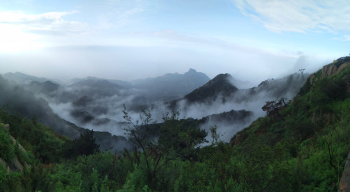
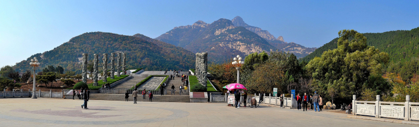

| 泰安 | |||||
|---|---|---|---|---|---|
| 首页 | 历史沿革 | 地理环境 | 泰山文化 | 历史文化 | |
自然环境

地质构造
泰山区大地构造位置属中期准地台鲁西断块隆起区西北部泰（安）莱（芜）断陷盆地之西部。地层区划上属于华北地层区鲁西分区泰安小区。出露地层有太古界泰山岩群，下古生界寒武系、奥陶系，新生界下第三系、第四系。
区内构造主要为断裂构造，其中两组断裂最为发育，即北东东向与北北西向。按地质力学划分，属于新华夏系的两组共轭扭裂面，即泰山式和大义山式。北东东向（泰山式）断裂由北向南依次为泰山断裂、结庄断裂（隐伏）；北北西向（大义山式）断裂由东向西顺序为岱道庵断裂，泮河断裂等。泰山断裂为本区构造格架断裂。
北东东向泰山断裂
泰山断裂（带）位于泰山南麓，由大致平行的多条断裂组成，大都为第四系坡洪积物所覆盖，仅零星裸露。陈家庄断裂走向70°，倾向东南，倾角70°；岱道庵断层面走向45°，倾向东南，倾角87°；大马庄断层面走向47°，沿走向呈舒缓波状展布。断面平滑，内有泥、钙质胶结的构造角砾岩，显示了早期以张为主，晚期以压扭为主的多期活动特征。其主断裂北侧为泰山群变质岩构成的上升盘，南侧为新生界地层构成的下降盘。在断裂带内次一级断层之间，由于弧形断裂两盘的牵引作用，尚夹有古生界灰岩地块。
北北西向断裂
岱道庵断裂（带）在区内大都为第四系所覆盖，仅在南北两端有所显示。断裂带北起岱道庵，经上高镇向南至旧县。断裂带最宽达870米，断裂走向330°—350°，倾向北东，倾角70°。泮河断裂亦为次一级断裂，展布方向大致与岱道庵断裂类似。泮河主要是沿该断裂追踪发育而成。北端切割泰山断裂，向南经栗家庄延伸至汶河南岸岱岳区的桥沟村附近。
气候特征
泰安市属于温带大陆性半湿润季风气候区，四季分明，寒暑适宜，光温同步，雨热同季。春季干燥多风，夏季炎热多雨，秋季晴和气爽，冬季寒冷少雪。全市多年平均太阳辐射总量为121.58千卡/平方厘米，年际变化在112—131千卡/平方厘米之间。年内以5月份最多，12月份最少。按80%保证率计算，全年辐射总量为117.9千卡/平方厘米。在3—11月份作物生产发育期间，可有102亿千卡/公顷的能量供利用。

地形地貌
山地
集中分布在市域北部和东部，面积14.07万公顷，占全市土地总面积的18.3%。一般海拔高度在400—800米之间。
五岳之首的东岳泰山雄距市域北部，横跨市岱岳区、泰山区和肥城市，向东延伸至济南市莱芜区、钢城区，面积426平方千米，其中主峰玉皇顶，为山东省内第一高峰，海拔1532.7米，相对高度1391米，矗立于泰城北面。
中部徂徕山横卧于市郊区和新泰市结合部，主峰太平顶，海拔1028米。东部莲花山位于新泰市境内，向北绵延至济南市。新泰市南部和宁阳县东部的低山丘陵属蒙山支肪的绵延。
丘陵
主要分布在新泰市西南部、宁阳县东部、市郊区西北部、肥城盆地边缘及东平县北部，面积31.64万顷，占全市土地总面积的41.1%，海拔高度一般在120—400米之间。
平原
主要分布在山麓及河流沿岸，多为河谷平原和山前冲、洪积冲平原，面积27.76万公顷，占全市土地面积的36.1%，海拔高度在60—120米之间。
洼地
气候特征
泰安市属于温带大陆性半湿润季风气候区，四季分明，寒暑适宜，光温同步，雨热同季。春季干燥多风，夏季炎热多雨，秋季晴和气爽，冬季寒冷少雪。全市多年平均太阳辐射总量为121.58千卡/平方厘米，年际变化在112—131千卡/平方厘米之间。年内以5月份最多，12月份最少。按80%保证率计算，全年辐射总量为117.9千卡/平方厘米。在3—11月份作物生产发育期间，可有102亿千卡/公顷的能量供利用。
日照
泰安市全年平均日照数2627.1小时，年际变化在2342.3—3413.5小时之间。日照百分率58%左右。年内以小麦灌浆的5、6月份最多，月均268小时左右。
气温
泰安市年平均气低温为12.9℃。年内7月份最高，平均26.4℃，1月份最低，平均为-2.6℃。极端最高气温41℃，极端最低气温-27.5℃。在地域分布上，南部、西部较高，东部、北部偏低。全年平均≥0℃的积温4731℃，≤10℃的积温4213℃，无霜期平均195天，最长可达241天，最短为161天。受地形、地貌影响，垂直的变化，地域的差异，形成了一些局部小气候区。泰山山顶年平均气温仅有5.2℃，而年降水量达1163.8毫米；徂徕山前、柴汶河畔的高温小区，年均气温14℃以上，比全市平均高出三、四度，达到了亚热带标准。
降水
安市多年平均降水量为697毫米。因受季风气候影响，年际降水变幅较大，年最大降水量1498毫米，年最小降水量199毫米，相差7.5倍。因受地貌影响，东部降水多于西部，山区降水多于平原，东部山区年平均降水量700—750毫米，西部平原则为600—650毫米，总趋势是自东北向西南逐渐减少。年内降水分布很不匀衡，夏季降水最多，占年降水量的65.2%，冬季最少，仅占3.6%；一年之中7月份最多，占年降水的32.1%，雨热同季，对农作物和林果生长发育十分有利，1月份最少，仅占0.96%。
|
|||||
| 班级：2022云计算 姓名：徐自硕 学号：202202060032 | |||||